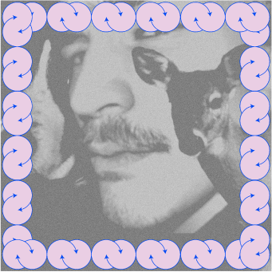
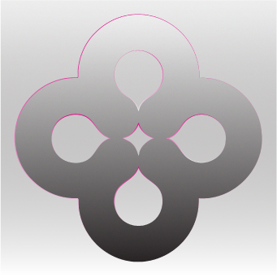

RETURN TO THE CITY
(EP, 27 June 2025)
Using field recordings, found sounds, electronics and vocal
arrangements, “Return To The City” explores the dichotomy of
modern urbanism.
Recorded and realised using the Elektron Digitakt system,
field recordings, choir, violin, accordion and percussion.
Read more on ~Bandcamp

ALKIMIA
(Single, 28 April 2026)
Fixed media piece written for 16 channels.
Among large FM bells, birdsong, microscopic percussion,
zither, modular synthesis and complex clusters of distorted
vocals, Alkimia is an imagined soundtrack to the
protoscientific alchemical attempts to obtain gold from
common earth metals in medieval times.
Read more on ~Bandcamp